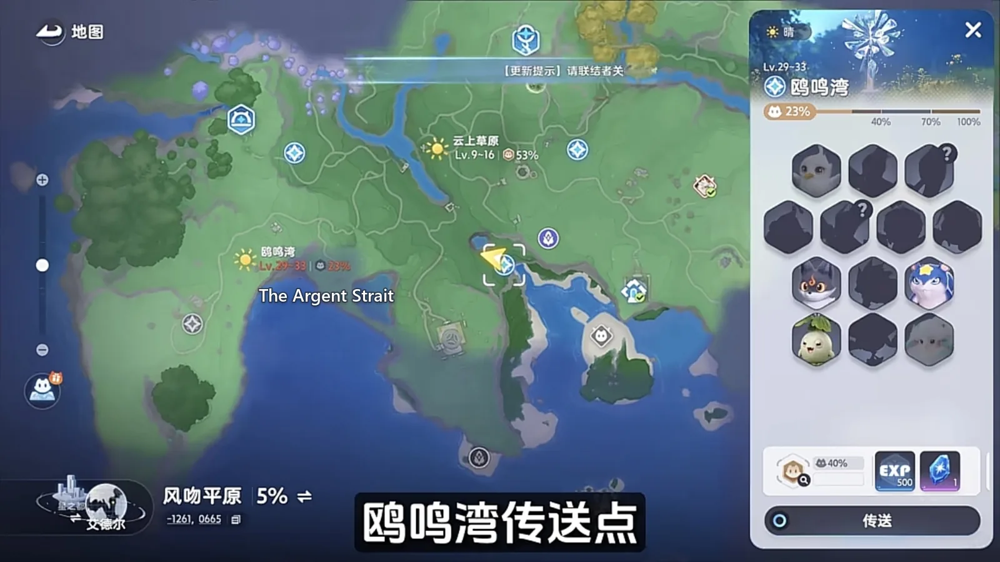
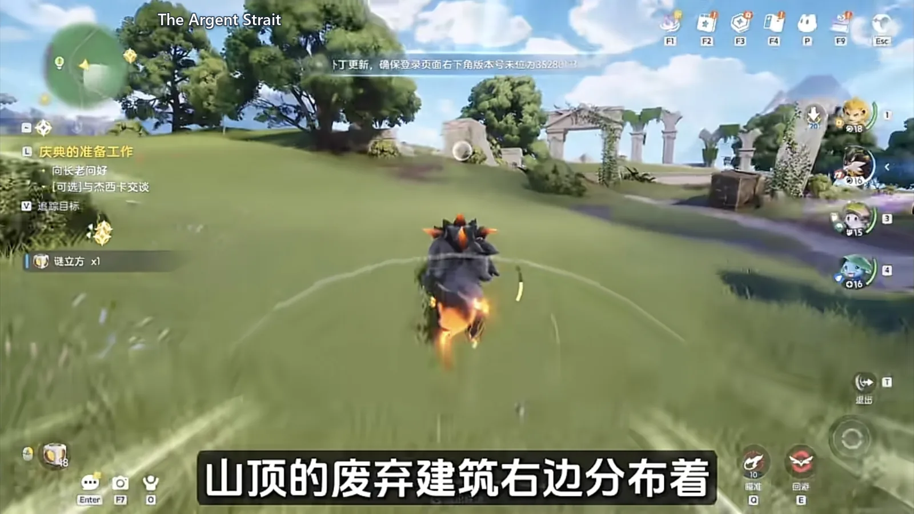
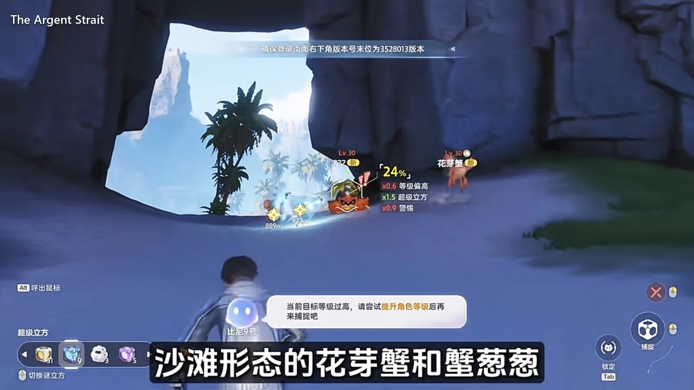
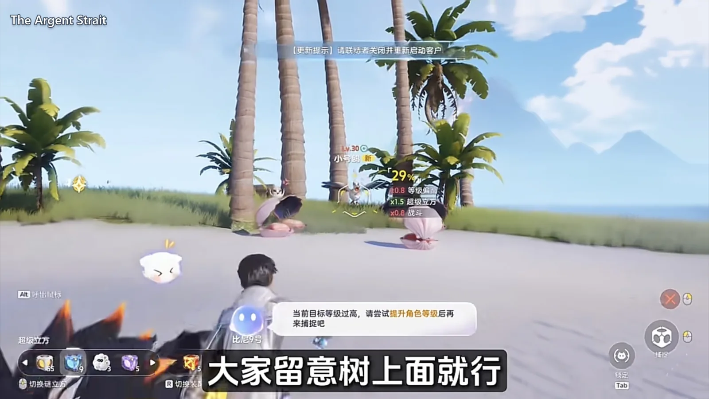
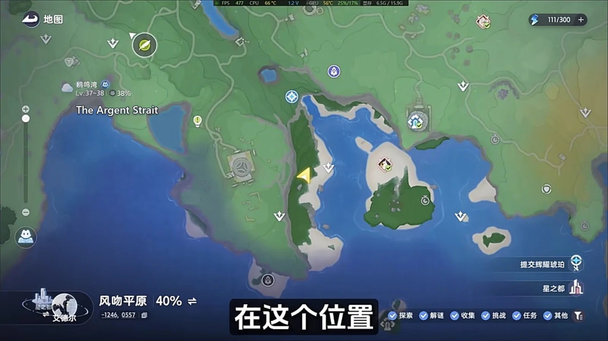
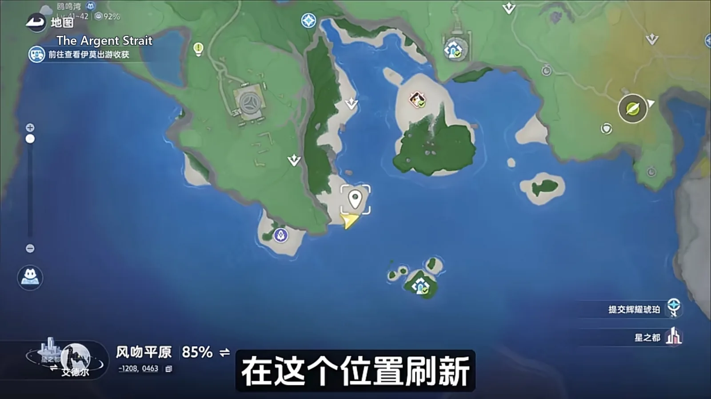
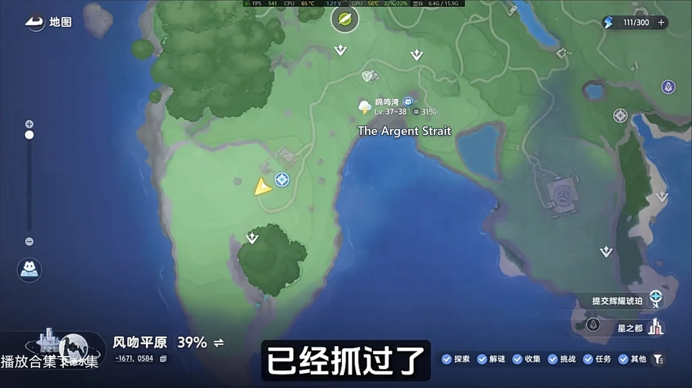

Home首页 / Guides攻略 / The Argent Strait: Every Spawn Point, Walked in One Lap《全地图、全形态伊莫收集》：鸥鸣湾
Checked核对于 October 15, 20262026 年 10 月 15 日
The Argent Strait: Every Spawn Point, Walked in One Lap《全地图、全形态伊莫收集》：鸥鸣湾
One lap of The Argent Strait: the region's Aniimo sit on a single line, Cornet only drops once every shell is open, and the weather and an unlock each gate one more.鸥鸣湾一趟跑完：这片图的伊莫基本挤在一条线上，贝壳全开小号鸥才下来，天气和解锁各管着哪几只。
The Argent Strait does not scatter its Aniimo. Almost everything the region has sits on one line, and walking it straight through is enough — no doubling back. The one rule worth memorising is this: every shell on the beach has to be opened, or the last gull never comes down. What follows is the lap in the order to walk it, starting from the waypoint.鸥鸣湾的伊莫点位不散，基本都挤在一条线上，顺着走一圈就能收齐，不用来回折返。从传送点下来，先在悬崖边扫口哨鸥，接着一路往山上跑，把路边和山顶的常见货顺手收掉，再折回沙滩，把沿途遇到的贝壳一个个开完。这一趟真正要记住的只有一件事：贝壳得全开，小号鸥才会露面，漏一个都不行。下面按走的顺序，从传送点开始过一遍。

Down from the waypoint: clear the Chirpi on the cliff从传送点下来，先扫悬崖边的口哨鸥
Teleport in and turn the camera — a crowd of Chirpi (Wind · Support) is already on the cliff edge. There is nothing difficult about this start, so take them all and turn straight up the hill; standing around here buys nothing.传送到鸥鸣湾，视角转一下就能看到悬崖边上一群口哨鸥（Chirpi，风 · 辅助）。这类起步点没什么难度，先收干净，抓完直接转头往山上跑，别在原地多停。
Up the hill: two common spawns, and a Sparkling Nimbi上山顺路：两只常见货，加一只闪耀云朵羊
Emberpup (Fire · DPS) and Flameruff (Fire · DPS) are the two that turn up most often along the road up; take them in passing and don't stop for them. Further on, on the slope and the summit, a Sparkling Nimbi (Wind · Support) spawns — that one is worth a few more minutes than the pair by the road.上山的路边，小炭犬（Emberpup，火 · 输出）和焚火狼（Flameruff，火 · 输出）是最常刷到的两只，碰到顺手抓一下就行，不用特意停下。再往上走，山腰和山顶会刷出闪耀的云朵羊（Nimbi，风 · 辅助），这一只比路边那两只值得多花点时间。
The ruined building: Iris on the right, and a rain-only Nimbi山顶废弃建筑：右边是飘飘花，雨天还多一只云朵羊
To the right of the ruined building on the summit sit the few Iris (Grass · DPS) this region has — if you are filling the register, don't walk past them. Come here in rain, though, and a Rainstorm Form Nimbi (Wind · Support) spawns under this tree as well. That one never appears in the register on an ordinary visit.山顶那座废弃建筑的右边，分布着鸥鸣湾为数不多的飘飘花（Iris，草 · 输出），想凑图鉴就别错过。要是正好赶上下雨天过来，这棵树下面还会多刷出一只雨天形态的云朵羊（Nimbi，风 · 辅助），这一只平时在图鉴里是看不到的。

The beach: Budclaw, Shrubclaw and the Alpha Tubster沙滩和贝壳：花芽蟹、蟹葱葱，还有大号鸥这个头目
Once the hill is done, run for the cliff. Drop down from this spot and there is a golden chest waiting — but the chest is not the point. What matters is the shells beside it: open every one you pass. The beach spawns Bay Form Budclaw (Rock · Grass · Break) and Bay Form Shrubclaw (Rock · Grass · Break), so take them as you go. This stretch is also where Tubster (Wind · Break) is marked; it is the region's Alpha, flagged clearly on the map, so follow the marker over and fight it.山上的收完，一路往悬崖那边跑，从这个地方跳下来有一个黄金宝箱。不过重点不在宝箱上，真正要动的是旁边的贝壳，见到就打开。沙滩上会刷新海湾形态的花芽蟹（Budclaw，土 · 草 · 击破）和蟹葱葱（Shrubclaw，土 · 草 · 击破），顺手抓了就行。这一片还标着大号鸥（Tubster，风 · 击破）的点位，它是这片图的头目，地图上会有明确标识，顺着标记过去打。

Open every shell and Cornet comes down out of the tree贝壳开完，小号鸥才从树上下来
Once the shells are all open, a Cornet (Wind · DPS) drops out of the tree above. It does not come down every time — when nothing happens, look up at the trees instead of studying the ground.贝壳全部开完，树上面会跳下来一只小号鸥（Cornet，风 · 输出）。它不是每次都会下来，没动静的时候就多抬头看看树上，别光盯着地面找。

Two gulls that want a condition: Tromber and Prismana Cornet两只挑条件的鸥：长号鸥看天气，虹光小号鸥要解锁
Tromber (Wind · Support) is picky about the weather and only appears in rain or a thunderstorm. Before setting out, open the button on the right and check the forecast — note that what it shows is real-world time, not in-game time. Its spawn is fixed at this spot on the map.长号鸥（Tromber，风 · 辅助）挑天气，只在雨天或者雷雨天才会出现。出发前点开右边那个按钮看一眼未来的天气，注意上面显示的是现实时间，不是游戏里的时间。它出现的位置固定在地图上这一处。

Prismana Form Cornet (Wind · DPS) spawns somewhere else. To see it you first have to unlock Prismana weather or a nature nurture at the Ley Tree; with the condition closed it will not appear at all, so have one of the two in place before you go over.虹光形态的小号鸥（Cornet，风 · 输出）刷在另一处。想见它，得先去地脉树那里把虹光天气或者自然生态解锁，条件没开它就不会出现，这两样先备好再过去。

Hummin is a free pickup走调草顺手就抓
Hummin (Grass · Break) spawns at this one point as well. The main story carries you past it, and a trip out on purpose is no loss either.走调草（Hummin，草 · 击破）也只是刷在这处点位。做主线任务的时候顺手就能抓到，专门跑一趟也不亏。

The order to walk it in走这一趟的顺序
None of this lap is extra work and the order is fixed. Down from the waypoint, clear the Chirpi on the cliff edge; up the hill, taking the common spawns by the road and on the summit as you pass; back along the sand, opening the shells one by one and then looking up to wait for Cornet to come down; then the two gulls that want a condition, with the forecast checked and the unlock confirmed before you set off; and Hummin picked up on the main story while you are there.这一趟没有多余的操作，顺序固定成几步就行。从传送点下来，先扫悬崖边的口哨鸥，往山上走，把路边和山顶的常见货顺手收掉；折回沙滩，把沿途的贝壳一个个开完，开完再抬头等小号鸥从树上下来；挑条件的长号鸥和虹光小号鸥，出发前先看一眼天气、确认解锁，再过去；主线的走调草顺手就抓。
The reason for that order is simple: take everything you can take in one pass first, and deal with the two that wait on weather or an unlock afterwards. Get the order right and you never walk back for a condition. The Argent Strait is a region you finish in one lap.这么排的道理很简单：先把能一次拿完的拿完，再处理要等天气、要解锁的那两只。顺序对了就不用为了条件来回折返，鸥鸣湾这一张图，跑一趟就齐了。